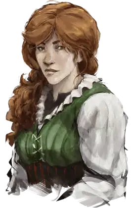

Бонни
Bonnie
Средний Монстр (Перевертыш), нейтральный, именной НИП

Класс Доспеха 14
Хиты 52 (8к8 + 16)
Скорость 20 футов
| мод | спас | ||
|---|---|---|---|
| СИЛ | 11 | +0 | +0 |
| ЛОВ | 18 | +4 | +4 |
| ТЕЛ | 14 | +2 | +2 |
| мод | спас | ||
|---|---|---|---|
| ИНТ | 11 | +0 | +0 |
| МДР | 12 | +1 | +1 |
| ХАР | 14 | +2 | +2 |
Навыки Обман +6, Проницательность +3
Иммунитет к состояниям очарование
Чувства тёмное зрение 60 футов, пассивное Восприятие 11
Языки Общий
Опасность 4 (1100 опыта)
Бонус мастерства +2
Особенности
Перевертыш. Бонни может действием принять облик любого Маленького или Среднего гуманоида, которого она когда-либо видел, или свой естественный облик. Её характеристики, кроме размера, одинаковы в любом облике. Её снаряжение не трансформируется. Будучи убитой, Бонни принимает свой естественный облик.
Мастер устраивать засады. Бонни совершает с преимуществом броски атаки по всем существам, которых она застала врасплох.
Внезапная атака. Если Бонни застает врасплох существо и попадает по нему атакой в первом раунде сражения, цель получает от атаки дополнительный урон 10 (3к6).
Действия
Мультиатака. Бонни совершает две рукопашные атаки.
Размашистый удар. Рукопашная атака оружием: +6 к попаданию, досягаемость 5 футов, одна цель. Попадание: Дробящий урон 7 (1к6 + 4).
Чтение мыслей. Бонни читает с помощью магии поверхностные мысли одного существа в пределах 60 футов от него. Эффект может проникать через препятствия, но 3 фута древесины или грунта, 2 фута камня, 2 дюйма металла или тонкий лист свинца блокируют его. Пока цель находится в пределах дистанции, Бонни может продолжать чтение мыслей, при условии, что концентрация Бонни не прерывается. Читая мысли цели, Бонни совершает с преимуществом проверки Мудрости (Проницательность) и Харизмы (Запугивание, Обман и Убеждение) против цели.
Описание
Доппельгангер притворяется дружелюбной барменшей.
На самом деле она вожак шайки из пяти доппельгангеров, прибывших в Глубоководье чуть больше года назад. Чтобы шайка сводила концы с концами, она работает на Дарнана барменшей. Маттрим Мейрег знает её секрет.
Доппельгангеры — хитрые перевёртыши, которые, принимая вид других гуманоидов, используют это для сбрасывания преследования и заманивая жертв в ловушки. Мало кто внушают страх, подозрения и использует ложь лучше, чем доппельгангеры. Распространившись по всем землям и цивилизациям, они могут принять вид любого существа любой расы.
Кража секретов. Возможность принимать любой облик позволяет доппельгангеру влиться почти в любое общество, но эта способность не включает в себя знание языков, не даёт манеры, память и характер. Доппельгангеры нередко преследуют или похищают существ, в которых намерены превратиться, изучая их, и выведывая их секреты. Доппельгангеры способны читать поверхностные мысли существ, что позволяет им узнавать имена, желания, страхи существ, и даже немногие разрозненные воспоминания. Доппельгангер, имитирующий конкретное существо в течение долгого периода, может держать оригинал живым под рукой неделями, ежедневно изучая разум жертвы, чтобы достоверно узнать, как та говорит и поступает.
Мошенники гедонисты. Доппельгангеры работают в одиночку или небольшими группами, в которых роли переходят от одного жулика к другому. Пока один доппельгангер занимает место убитого торговца или дворянина, остальные берут на себя роли личностей, в зависимости от обстоятельств, играя родственников или слуг, и так живут за счёт жертвы.
Подкидыши. Доппельгангеры слишком ленивы и корыстны, чтобы воспитывать своё потомство. Они принимают облик притягательных мужчин, чтобы соблазнить женщин, а затем бросить воспитывать их детей. Ребёнок доппельгангер выглядит как нормальный представитель вида матери, пока не достигнет подросткового возраста, во время которого обнаруживает свою истинную природу и отправляется в путь, чтобы отыскать своих родичей и присоединиться к ним.